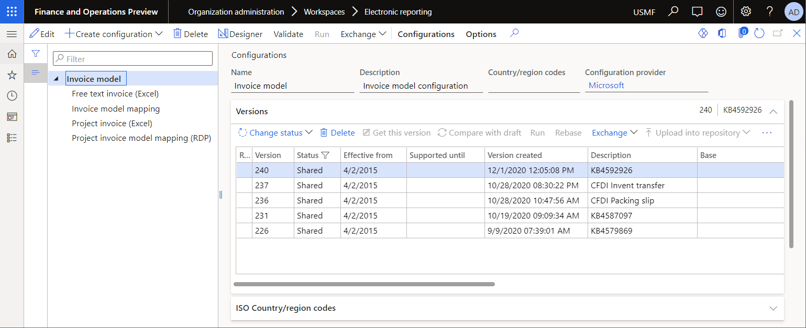
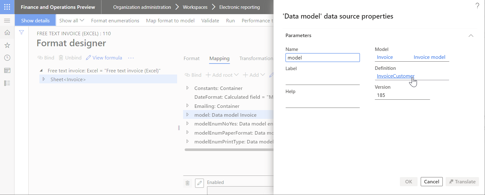
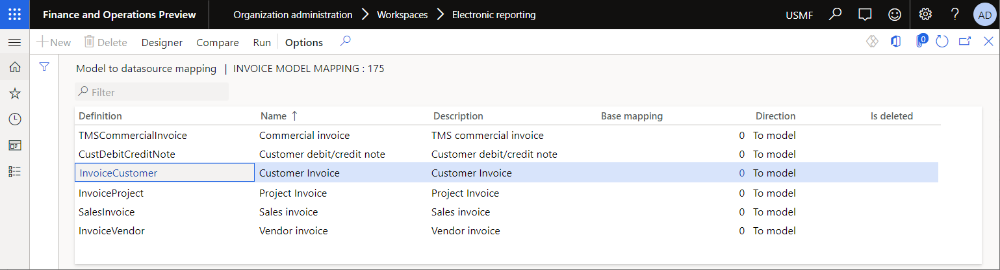
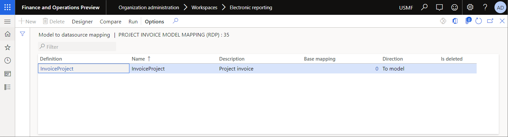
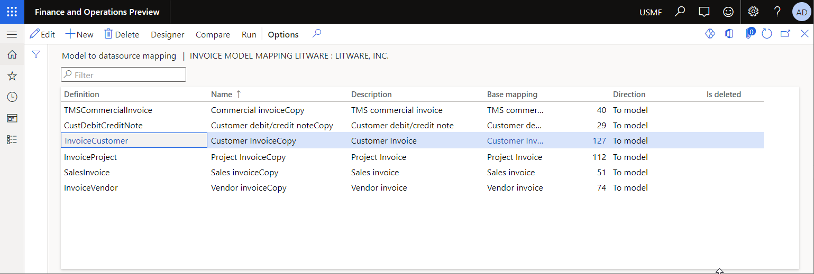
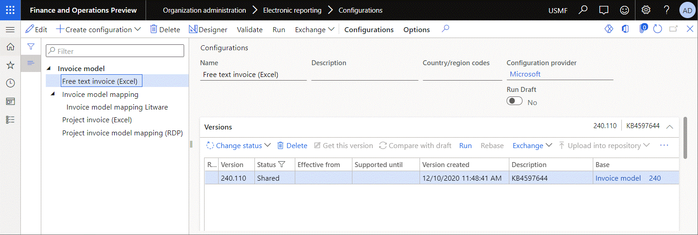
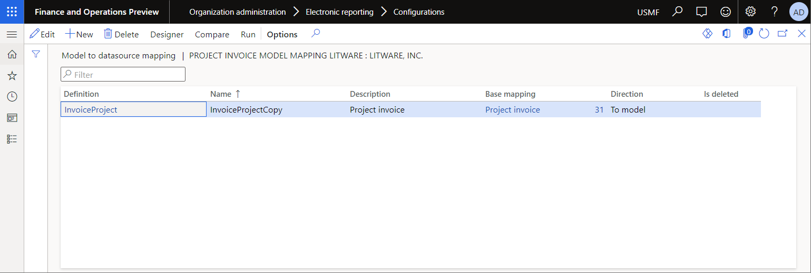
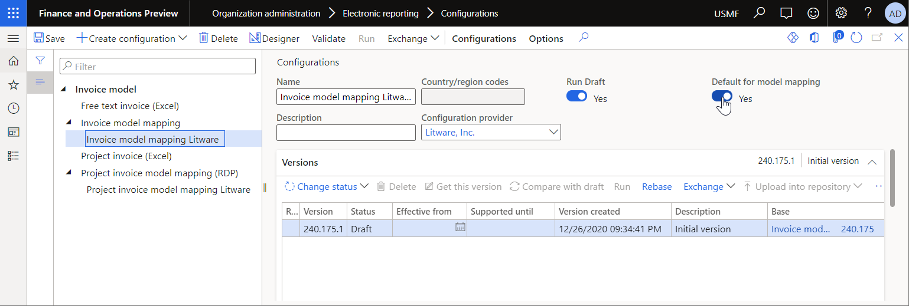
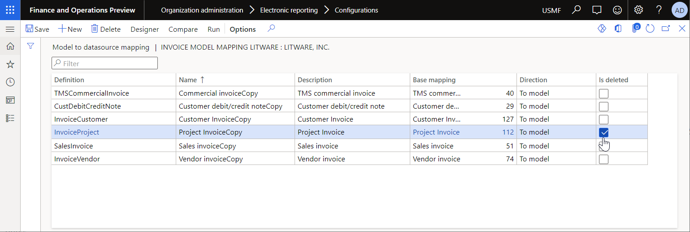

Manage several derived mappings for a single model root
An Electronic reporting (ER) data model component is used in every configured ER format component as the data source to generate outbound documents. To describe a single business domain, configure a data model component that has many root definitions.
Every root definition lets you represent data of that domain in the way that is best suited to specific reporting purposes. For every root definition, you can configure an ER model mapping component as the Microsoft Dynamics 365 Finance–specific implementation of your data model. In this way, you describe how your data model will be filled in at runtime.
ER model mapping components can reside in ER data model configurations and ER model mapping configurations. A single ER configuration can contain many mapping components, each of which is configured for a single root definition. Alternatively, a single ER configuration can contain just one mapping component that is configured for a single root definition.
Many configuration providers might offer ER model mapping configurations for the same ER data model. Those model mapping configurations might contain mapping components for different root definitions. You might use a model mapping for one root definition that is offered by one provider and use a model mapping for another root definition that is offered by another provider.
The procedures in this topic explain how to manage multiple ER model mapping configurations of an ER data model when they contain different model mapping components configured for the same root definition.
To complete the procedures in this topic, you must be assigned to the System administrator or Electronic reporting developer role.
All the following procedures can be done in the USMF company. No coding is required.
Configure the ER framework
As a user in the Electronic reporting developer role, configure the minimal set of ER parameters before you use the ER framework to generate business documents.
Import the standard ER format configurations
To add the standard ER configurations to your current instance of Finance, you must import them from the ER repository that was configured for that instance. Follow the steps in Download ER configurations from the Global repository of Configuration service to import the following ER format configurations:
- Free text invoice (Excel), version 220.106
- Project invoice (Excel), version 226.27
Review the imported ER configurations
Go to Organization administration > Workspaces > Electronic reporting.
On the Localization configurations page, in the Configurations section, select the Reporting configurations tile.
On the Configurations page, in the configuration tree in the left pane, expand Invoice model.

Review the Free text invoice (Excel) format:
In the configuration tree in the left pane, select Free text invoice (Excel).
On the Action Pane, select Designer.
On the Format designer page, on the Mapping tab, in the data sources list, select Model.
Select View.
Thecurrent ER format is configured to use the InvoiceCustomer root definition of Invoice model. When this format is run, and the Model data source is called, the model mapping that is configured for the InvoiceCustomer root definition is used to access application data and fill in the data model.

Close the Format designer page.
Review the content of the Invoice model mapping configuration:
In the configuration tree in the left pane, select Invoice model mapping.
On the Action Pane, select Designer.
On the Model to datasource mapping page, notice that the current ER model mapping configuration contains several model mapping components:
- The Customer Invoice model mapping is configured for the InvoiceCustomer root definition of Invoice model. Therefore, when the Free text invoice (Excel) ER format is run, the Customer Invoice model mapping of this ER configuration can be chosen to access application data and fill in the data model.
- The Project Invoice model mapping is configured for the InvoiceProject root definition of Invoice model. Therefore, when the Project invoice (Excel) ER format is run, the Project Invoice model mapping of this ER configuration can be chosen to access application data and fill in the data model.

Close the Model to datasource mapping page.
On the Versions FastTab, select Delete to delete all versions of this ER configuration that are later than version 240.175.
Review the content of the Project invoice model mapping (RDP) configuration:
In the configuration tree in the left pane, select Project invoice model mapping (RDP).
On the Action Pane, select Designer.
On the Model to datasource mapping page, notice that the current ER model mapping configuration contains the InvoiceProject model mapping, and that this model mapping is configured for the InvoiceProject root definition of Invoice model. When the Project invoice (Excel) ER format is run, select the InvoiceProject model mapping of this ER configuration to access application data and fill in the data model.

Close the Model to datasource mapping page.
On the Versions FastTab, select Delete to delete all versions of this ER configuration that are later than version 226.35.
Customize the imported ER configurations
This section explains how to customize the model mappings that are provided by Microsoft. For example, customization might be required to implement your custom logic or add missing bindings.
Customize the Invoice model mapping configuration
On the Configurations page, in the configuration tree in the left pane, select Invoice model mapping.
On the Action Pane, select Create configuration.
In the Create configuration drop-down dialog box, in the New field, select Derive from Name: Invoice model mapping, Microsoft.
In the Name field, enter Invoice model mapping Litware.
Select Create configuration.
Mark the draft version of the derived mapping as available for use at runtime:
- On the Action Pane, on the Configurations tab, in the Advanced settings group, select User parameters.
- In the User parameters dialog box, set the Run settings option to Yes, and then select OK.
- Select Edit to make the page editable, as required.
- For the Invoice model mapping Litware configuration that is currently selected in the configuration tree, set the Run Draft option to Yes.
On the Action Pane, select Designer to review the model mappings of this configuration.

Tip
You can now open any of the ER model mapping components of this ER configuration in the designer to configure your custom logic. For more information, see Customize the model mapping configuration.
Close the Model to datasource mapping page.
You now have Invoice model mapping and Invoice model mapping Litware configurations, each of which has a model mapping that is configured for the InvoiceCustomer root definition. Explicitly assign one of the model mappings as the default model mapping that is used by any of the ER formats, such as the Free text invoice (Excel) format that contains a model data source that has the InvoiceCustomer root definition. Otherwise, when you run, edit, or validate one of the ER formats, the following exception is thrown to notify you that no default model mapping has been explicitly assigned:
More than one model mapping exists for the '<model name> (<root descriptor>)' data model in the configurations <configuration names separated by commas>. Set one of the configurations as default.

Customize the Project invoice model mapping (RDP) configuration
On the Configurations page, in the configuration tree in the left pane, select Project invoice model mapping (RDP).
On the Action Pane, select Create configuration.
In the Create configuration dialog box, in the New field, select Derive from Name: Project invoice model mapping (RDP), Microsoft.
In the Name field, enter Project invoice model mapping Litware.
Select Create configuration.
For the Project invoice model mapping Litware configuration that is currently selected in the configuration tree, set the Run Draft option to Yes.
On the Action Pane, select Designer to review the model mappings of this configuration.

Close the Model to datasource mapping page.
You now have Invoice model mapping, Project invoice model mapping (RDP), and Project invoice model mapping Litware configurations. Each of these configurations has a model mapping configured for the InvoiceProject root definition. Explicitly assign one of the model mappings as the default model mapping that is used by any of the ER formats. For example, use the Project invoice (Excel) format that contains a model data source that has the InvoiceProject root definition. Otherwise, when you run or edit one of the ER formats, an exception is thrown to notify you that no default model mapping has been explicitly assigned.
Select the derived Invoice model mapping Litware configuration as the configuration that contains default model mappings
On the Configurations page, in the configuration tree in the left pane, select Invoice model mapping Litware.
Set the Default for model mapping option to Yes.

Because of this setting, the Customer Invoice Copy model mapping is used when you run the Free text invoice (Excel), or when you edit or validate it. The Customer invoice model mapping from the Invoice model mapping configuration is ignored.
You can now open the Free text invoice (Excel) format for review in the format designer.
Select the derived Project invoice model mapping Litware configuration as the configuration that contains default model mappings
On the Configurations page, in the configuration tree in the left pane, select Project invoice model mapping Litware.
Set the Default for model mapping option to Yes.
In this case, unlike the case that is described for the Invoice model mapping Litware configuration in the previous section, you can't start to use the InvoiceProject Copy model mapping from the Project invoice model mapping Litware configuration. Two configurations that contain a model mapping for the InvoiceProject root definition are currently marked as the default configuration. Therefore, they have equal priority for use. To resolve this issue, complete the remaining steps of this procedure.
In the configuration tree in the left pane, select Invoice model mapping Litware.
On the Action Pane, select Designer.
On the Model to datasource mapping page, select Edit to make the page editable, as required.
Select the Project Invoice Copy model mapping, and then select the Is deleted check box for it.

Because of this setting, the Invoice model mapping Litware configuration is treated as though it has no model mapping for the InvoiceProject root definition. The InvoiceProject Copy model mapping issued by default. The configuration, Project invoice model mapping Litware, which contains this model mapping, is marked as the default configuration. Because it is marked as default, it has a higher priority than the InvoiceProject model mapping from the Project invoice model mapping (RDP) configuration.
Other considerations
The InvoiceProject Copy model mapping of the Project invoice model mapping Litware configuration is designed to use the ReportDataProvider data source. The data source is part of the Object type that refers to the PsaProjInvoiceDP application class. This class is implemented as the data provider for the project invoice SQL Server Reporting Services (SSRS) report of the Print management framework. Select this data source as the ER integration point (This is an external linThis link was changed due to HTMLfromRepoGenerator). The current ER implementation for Print management reports takes this setting into account. For more details, review the source code of the ERPrintMgmtDataProviderReport application class. At runtime, the assignment of the ReportDataProvider data source as the model mapping integration point forces Finance to treat this mapping component with a higher priority than the InvoiceProject mapping component from the Project invoice model mapping (RDP) configuration.